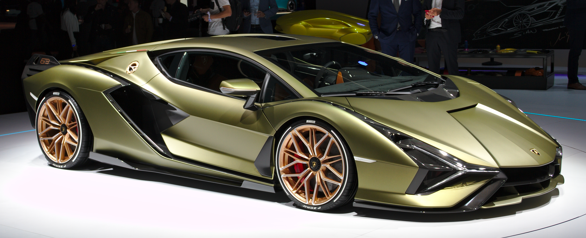
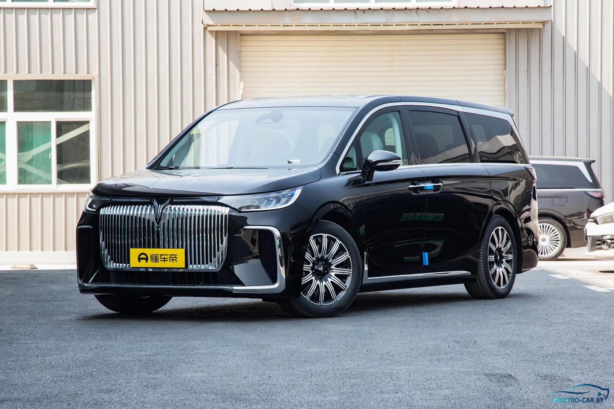
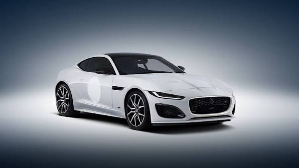
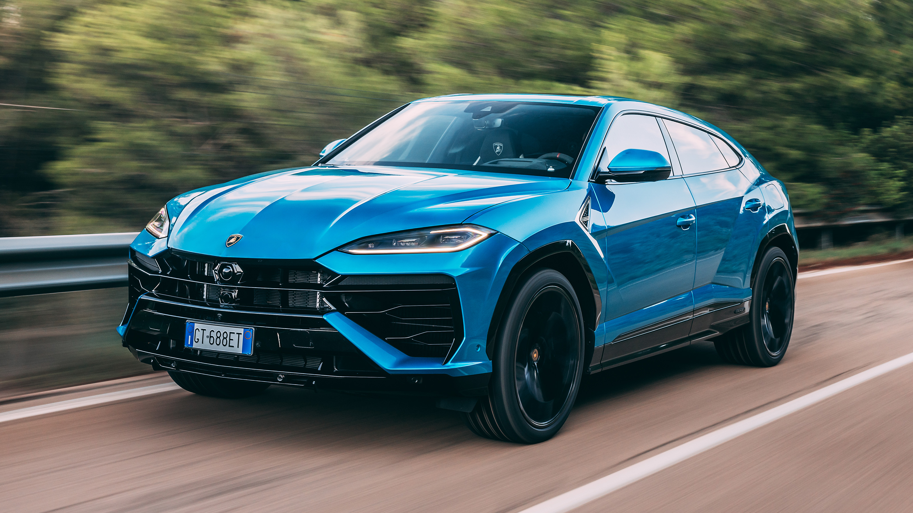
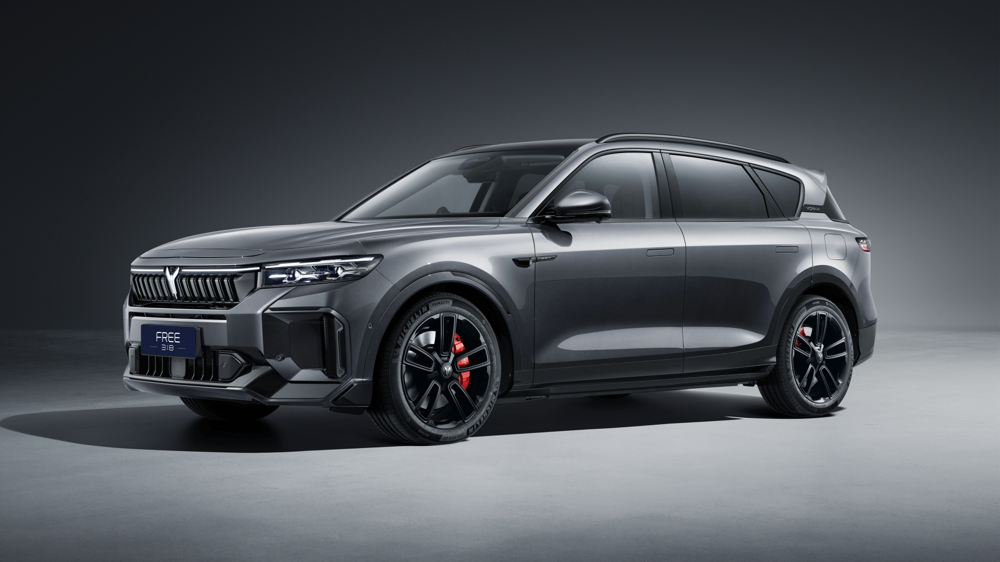
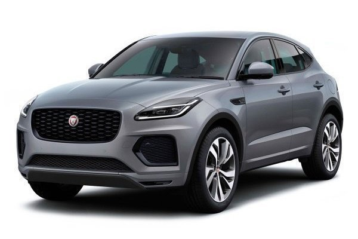

Итальянский производитель спорткаров и суперкаров, основанный в 1963 году Ферруччо Ламборгини.
Премиальный суббренд китайской компании Dongfeng, специализирующийся на технологичных электромобилях и гибридах.
Британский бренд премиальных автомобилей с богатой историей спортивных и представительских моделей.
| Характеристика | Lamborghini | Voyah | Jaguar |
|---|---|---|---|
| 1. Самая дорогая модель | Sian FKP 37 (~$3,700,000) | Dreamer EV (~$90,000) | F-Type ZP Edition (~$150,000) |
| Фото самой дорогой модели |  |
 |
 |
| 2. Самая дешёвая модель | Urus (~$230,000) | Free EV (~$45,000) | E-Pace (~$48,000) |
| Фото самой дешёвой модели |  |
 |
 |
| 3. Двигатель | V12 / V10 атмосферный | Электро / Гибрид (EREV) | Бензиновый V8 / I4 турбо |
| 4. Расход топлива | 14 - 19.5 л / 100 км | 0 - 6.5 л / 100 км (Гибрид) | 8.9 - 12.3 л / 100 км |
| 5. Скорость (разгон 0-100 км/ч) | 2.8 - 3.6 сек | 4.4 - 5.9 сек | 3.7 - 7.0 сек |
| 6. Наличие экологических сертификатов | Euro 6d | Zero Emission (Euro 6 / EV) | Euro 6d-Temp |
| 7. Гарантийный срок | 3 года без ограничения пробега | 5 лет / 100 000 км | 3 года / 100 000 км |
| 8. Максимальная скорость | 305 - 355 км/ч | 200 км/ч | 240 - 300 км/ч |
| 9. Тип трансмиссии | Роботизированная (ISR / DCT) | Редуктор (1-ступенчатый) | Автоматическая (ZF) |
| 10. Количество передач | 7 или 8 передач | 1 передача (Direct Drive) | 8 передач |
| Работа выполнена Петролай Анастасией. | |||